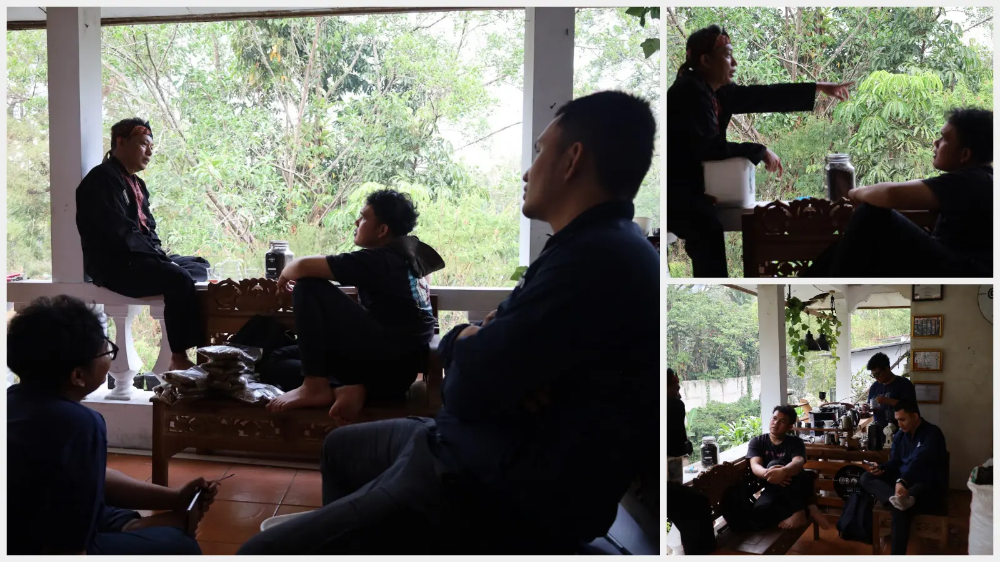
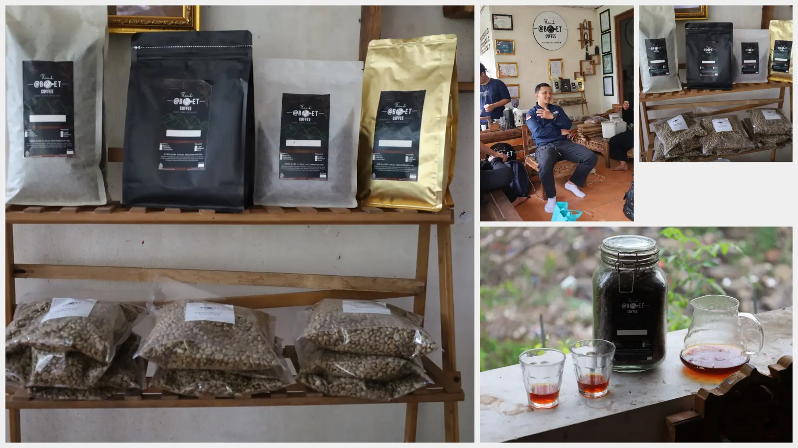

Observe
Pay attention to what makes a cup clear, balanced, and enjoyable.
A small boost for revisions, deadlines, and nights when one more page makes a difference.
View the menu↗
KOPI TA started with a simple idea: final-semester students need an easy way to reset between revisions. We learned by watching, tasting, asking questions, and sharing what we found. That experience shaped a simple, student-friendly menu for long days of thesis work.

Good coffee does not finish the chapter for you. It gives you a moment to return to it.
Discover the ritual ↗Pay attention to what makes a cup clear, balanced, and enjoyable.
Ask people who understand the beans and the process behind a good cup.
Compare each drink and notice how small choices change the result.
Turn what we learned into simple drinks for students finishing their thesis.
Final semester brings unfinished chapters, supervisor notes, and deadlines that arrive too quickly. KOPI TA offers a familiar, affordable break before you get back to work.
“A good companion for the work ahead.”
Start with the document in front of you. Motivation can catch up later.
Take a sip, resolve one comment, then move to the next small task.
Small, consistent progress adds up.
Pick a drink, reset your focus, and get back to your next revision.